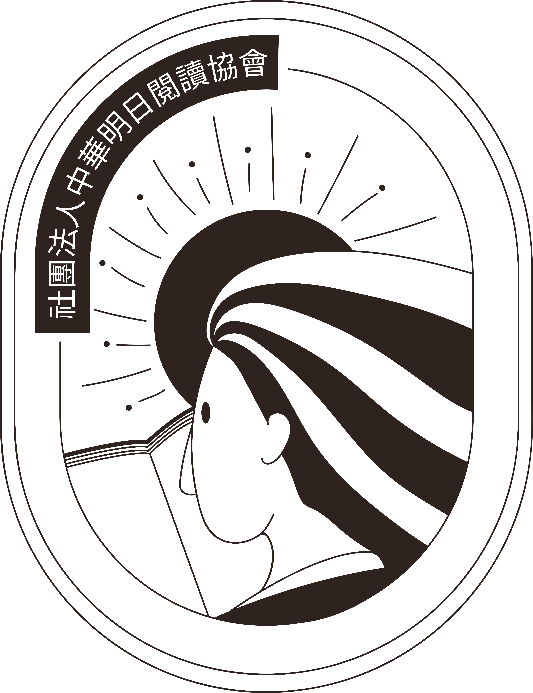
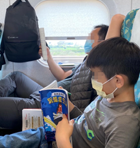
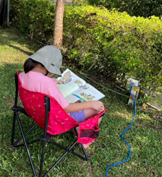
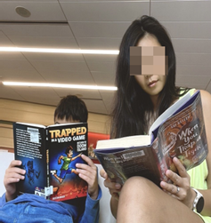
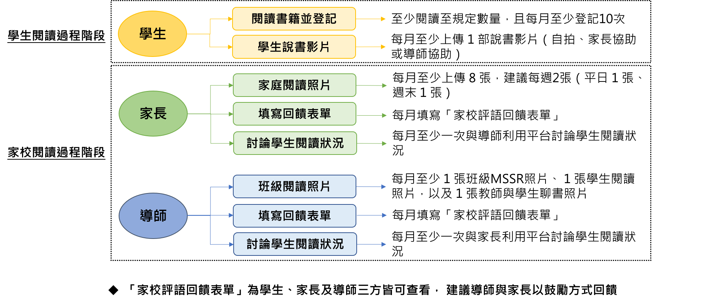
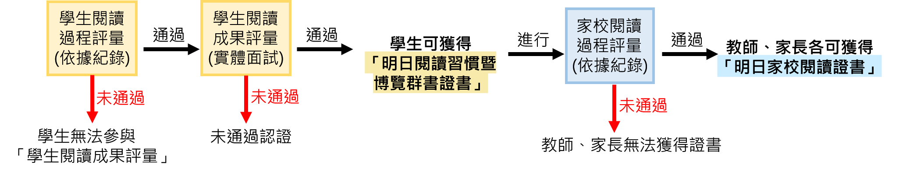
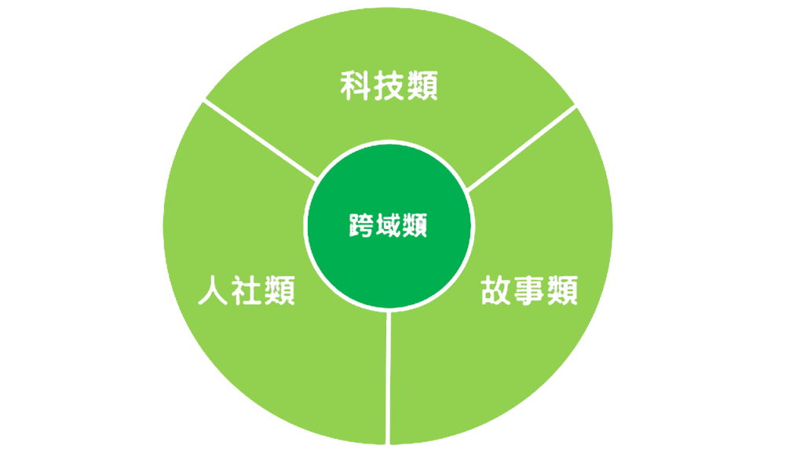

- 選讀書單已公布，請至【書目架構】->【書籍地圖】中查詢所有書籍詳細資訊。
- 親師生閱讀登記平台已開放於中華明日閱讀協會網站
- 「明日閱讀習慣及家校閱讀博覽會」正式開跑，報名時間自即日起至 3/31（一）中午 12 時止，名額有限，請儘速報名。
- 核心書單已公布，請至【書目架構】->【書籍地圖】中查詢核心書籍詳細資訊。選讀書單預計於4/1公布於本證賽官網。
- 閱讀登記系統、資料上傳平台預計於4/1開放於中華明日閱讀協會網站。
03月31日（一）中午12時止

社團法人中華明日閱讀協會

國立中央大學
閱讀習慣運動
學校帶動家庭，建立閱讀紙本書籍習慣以取代手機育兒
因應數位時代教育的挑戰，國立中央大學推動「閱讀習慣運動」，以取代手機育兒。經過十多年推廣，台灣已有2,000多所國中小學參與「明日閱讀」計畫。在此基礎上，國立中央大學協同「中華明日閱讀協會」，正試辦「明日閱讀習慣博覽會」，從「明日閱讀1.0」演進為「明日閱讀2.0」，期以深化閱讀文化，培養學生長期穩定的閱讀紙本書習慣，為未來社會培育具備深度思維與知識力的新世代公民。
數位媒體早已無所不在—在家裡、學校、辦公室、車上，甚至在皮包與口袋裡。長時間盯著螢幕，既入迷又順從，不僅主宰了成人的生活，也因難以抗拒將手機交給孩子以安撫他們、讓他們安靜，結果手機也主宰了孩子的學習。
中央大學國家講座教授陳德懷長期從事AI與網路輔助教學的研究，並持續關注科技對人類學習所帶來的正負面影響。他指出，科技已成為有效且不可或缺的學習工具，例如，有目的地進行網路搜尋、專題研究或資料調查，都需要仰賴網路資源；同時，AI教學系統亦迅速發展，其輔導能力已有接近真人教師水準的潛力。然而，長時間使用數位媒體所造成的負面影響日益嚴重，已不容忽視。
根據政府委託2022年的「網路沉迷研究調查報告」，台灣青少年在非上學日的平均每日上網時間為6小時以上，而在上學日則為4.4小時。換算每週高達34小時以上，約為一般成人每週40小時的標準工作時間的八分之七。主要的上網活動集中在社交媒體、短影音平台與線上遊戲等。
兒福聯盟2021年的一項調查指出，高達62.5%的國小至高中生出現疑似「網路社交焦慮」，且超過一半曾遭受網路霸凌的學生情緒受到明顯影響，其中有26.0%曾一度產生自傷念頭。有研究指出，數位成癮與焦慮、憂鬱等心理問題常常共存。事實上，兒少心理健康議題已成為全球性的公共衛生危機。根據衛生福利部最新統計，2009年至2023年間，14歲以下兒少自殺通報人次由208人次大幅增加至3,365人次，15年來成長達16倍。
至於閱讀方面，長時間大量投入螢幕，已使孩子難以專注並完整閱讀一本書。在螢幕上閱讀文字時，閱讀行為往往呈現跳躍式進行，而非由左到右、由上到下的連貫閱讀，而是快速捲動、掃視，只尋找感興趣的片段資訊。大量研究已證實，螢幕閱讀不僅削弱了深度閱讀與理解的能力，也明顯影響專注力的持續性，以及知識的記憶與長期保留。
遠見《未來Family》2017年的調查也發現，孩子每週的閱讀時間僅有4.4小時（現在可能更少），甚至比每一天花在上網的時間還少。另外，國外一項研究指出，兒童的腦部網絡連結會隨閱讀時間增加而增強，隨螢幕使用時間增加而減弱。腦部網絡連結代表知識的取得，因此，閱讀多，知識增多；螢幕多，知識減少。這與我們期望孩子在成長過程中「增添知識」的目標恰恰相反。教育是否正進入「膚淺」的年代？孩子是否正在變得越來越「笨」？正如卡爾在其經典著作《網路讓我們變笨？》中所警示的那樣。
陳德懷教授指出，讓手機成為育兒工具，可能正是現代孩子所面臨的最大威脅，父母應該有意識地優先保護孩子的大腦健康與認知發展。負面的網路經驗可能成為孩子成長過程中的巨大風險。「父母不會讓孩子隨便獨自走入暗黑街頭，但現在的網路就充滿了險惡的街頭。」他補充說。
此外，陳德懷教授也提及去年刊登在《大西洋月刊》的一篇文章〈那些無法閱讀書籍的頂尖大學生〉。文中提到，「以前的學生可以看很多本書，但在過去10年間，許多學生進入大學時—即便是頂尖名校的學生—根本沒有具備完整閱讀書籍的能力。」
陳教授也指出，對於孩子的學習，紙本閱讀展現出無可取代的優勢。紙本書能提升注意力、深化理解、鞏固記憶，幫助他們打下扎實的知識與語言基礎，同時有助於深度專注與全面理解，讓學習更加有效。相比之下，螢幕閱讀中常見的分心、淺閱讀、記憶弱化等問題，皆可能阻礙學習成效。有研究指出長期使用螢幕已培養出「分散式注意力」的習慣，現代人在任何螢幕上的平均專注時間僅約半分鐘到數分鐘不等，之後就會切換其他內容。
「在需要深度理解與長期記憶的學習中，傳統紙本閱讀仍是最可靠、最有效的選擇。隨著教育持續數位化，我們應審慎權衡，在課堂與自學中維持紙本閱讀的核心地位，同時輔以適當的數位工具，才能讓學習者既享科技之便，又不失認知深度，真正達成良好的學習效果。」陳教授補充。
陳德懷教授提出「少量螢幕時間教育」，英文稱為 Screenfew Education的觀念。他認為需要推廣這個觀念，因為無論在學校或家庭中，數位裝置應僅作為學習工具，並應訂定明確且嚴謹的使用規範，以確保科技的應用回歸支持學習，而非侵蝕學習的本質。儘管某些學習活動無法完全排除數位工具，教育工作者仍應時時警覺，不需使用螢幕時，應避免使用。因此，他鼓勵多採用實體桌遊等非螢幕學習方式，或使用無螢幕裝置，例如無螢幕的實體機器人。
此外，陳教授強調，要幫助孩子遠離螢幕沉迷，並支持他們健康學習與成長，必須走兩條路：
- 以紙本取代螢幕，以閱讀紙本書習慣取代螢幕習慣。透過家庭與學校攜手推動閱讀紙本書籍，培養孩子穩定且持續的閱讀習慣，讓他們自然減少對數位媒體的依賴；
- 多親近實體世界。積極提供孩子參與各種遊戲、戶外活動與運動的機會，讓身體活動與實體世界成為生活的一部分。
陳教授指出，常見的生活場景中，例如：孩子在家空閒時，或外出與家長一同乘坐高鐵、在餐廳等候用餐、在診所候診，或在露營期間的空檔，手上拿著的，大多是手機。然而，在陳教授與同仁多年前推動實驗教育而成立的「趣創者國際實驗教育機構」中（圖一），孩子們拿著的不是手機，而是紙本書。他們是熱愛閱讀的書迷，能隨時隨地沉浸於書本的世界中（圖二）。

圖一、「趣創者國際實驗教育機構」培養出一批熱愛閱讀的學生

在搭高鐵

在好市多

在露營

在理髮時

在候機室

度假時
圖二、閱讀習慣是在學校與家庭之外也能看見的風景
該機構成立的核心目標正是培養學生閱讀紙本書的習慣。他指出，一旦建立閱讀習慣，學生閱讀書籍的數量便會隨時間持續增加；在老師或家長適當引導下，閱讀內容也會逐漸加深加廣，進而博覽群書，大量吸收知識。持續而廣泛的閱讀，不僅促進知識累積，也深化思維與邏輯推理、豐富情感，並促進人格的健全發展。該實驗教育機構的高年級（小學）學生，已有能力閱讀多本國中至高中程度的書籍。 「量變帶來質變」，學生的學習表現常有大幅進步，甚至出現超齡表現（附錄）。
為什麼閱讀習慣重要？陳教授認同一本書的作者說法：個人經驗無法支撐在複雜世界做出判斷，需要大量閱讀書籍，獲取豐富知識及其他人的經驗作為基礎，才有足夠推理能力做出正確判斷。不閱讀數百本對自身有幫助的書，就是功能性文盲。
陳教授指出，以目前傳統學校的閱讀量，絕對不足以應對未來世界的需求。唯有透過「巨量閱讀」，才能在AI時代快速變遷的社會中發揮認知優勢、定位自我，理解生活與工作的意義，並體認其對個人、家庭與社會的價值。他補充說，人們還必須能與他人及AI共同創造知識，而這一切都須以巨量且廣博的知識作為根基，而這正有賴於終身閱讀紙本書的習慣養成。
「明日閱讀習慣暨家校共讀博覽會」旨在推廣由實驗教育機構發展的進階版明日閱讀—「明日閱讀2.0」—至其他學校。鼓勵教師與家長合作，引導學生對閱讀紙本書產生興趣，並透過以身作則—一種最有效的方式—帶動孩子閱讀紙本書，再結合聊書、薦書與說書等交流活動，重新建構與深化閱讀過的內容，並拓展閱讀視野。此外，活動強調過程與結果並重。我們重視過程：持續閱讀紙本書以培養閱讀習慣的過程；同時也重視最終成果：學生閱讀紙本書習慣的建立。
紙本書閱讀習慣的建立，家庭角色比學校角色更為重要，讓學校帶動家庭閱讀的風氣至為關鍵。正如《失控的焦慮世代》作者海德特提醒家長的：「這是一段關係，你做的事，往往比你說的話影響更深，因此請檢視自己的手機使用習慣。做個好榜樣，不要一邊滑手機，一邊敷衍孩子。」
此外，我們也注意到，隨著電子閱讀器技術的逐步發展，若未來相關的閱讀生態體系更加成熟，在不傷害數位健康的前提下，我們亦將考慮納入搭配電子閱讀器進行的閱讀活動，以提供更多元的閱讀形式與推廣策略，進一步擴展閱讀推動的可能性。
陳德懷教授提醒，建立閱讀習慣必須「三要」：要身教、要興趣、要習慣；「三不要」：不光說、不3C、不衝量。
「放下手機，拿起書本，博覽群書，與智慧同行，走向世界！」這是陳教授的期許。
附錄：實驗教育機構的學生畢業後，家長對我們的理念給予許多的肯定！有兩封學生就讀國一的時候，家長寄來的信，孩子的表現讓家長與老師都覺得難以置信。
「明日閱讀習慣及家校閱讀博覽會」每學期舉辦一次：
-
「參加者」：
本活動以一位學生、該生家長，以及該生導師三人作為一個組合參加，我們稱之為「參加者」。 -
兩階段實施方式：
實施方式分為兩階段，第一階段為「過程階段」，包含「學生閱讀過程階段」與「家校閱讀過程階段」，結束後進行第二階段「評量階段」，包含「學生閱讀過程評量」、「學生閱讀成果評量」及「家校閱讀過程評量」。 -
「學生閱讀過程階段」與「家校閱讀過程階段」：
「參加者」需於閱讀期間完成相關紀錄。（詳情請參閱 「過程階段」 ） -
「學生閱讀過程評量」、「學生閱讀成果評量」與「家校閱讀過程評量」：
-
「學生閱讀過程評量」：依據「學生閱讀過程階段」的紀錄，例如興趣與習慣等，進行評量。
- 「學生閱讀成果評量」：依據「學生閱讀過程階段」的紀錄，例如閱讀的書籍與內容等，進行面談評量。
- 「家校閱讀過程評量」：依據「家校閱讀過程階段」的紀錄，例如家庭閱讀的緊密度等，進行評量。 （詳情參照 「評量階段」 ）
-
「學生閱讀過程評量」：依據「學生閱讀過程階段」的紀錄，例如興趣與習慣等，進行評量。
-
多張認證：
參加者最多可獲得三張認證。- 若學生通過「學生閱讀過程評量」，就可進行「學生閱讀成果評量」，即與審查老師實體面談，若通過可獲得「明日博覽群書證書」一張。
- 若學生獲得「明日博覽群書證書」，家長與老師即可獲得「家校閱讀過程評量」的審查資格，依據「家校閱讀過程階段」的紀錄，若通過審查，家長與老師可各得「明日家校閱讀證書」一張。
換言之，有三種可能：
- 沒有獲得認證
學生在「學生閱讀過程評量」中沒有通過，或者通過「學生閱讀過程評量」，卻沒有通過「學生閱讀成果評量」 - 獲得一張認證
即只有學生獲得一張認證，學生通過「學生閱讀過程評量」與「學生閱讀成果評量」，但教師及家長沒有通過「家校閱讀過程評量」 - 獲得三張認證
即學生、家長與老師各獲得一張認證，學生通過「學生閱讀過程評量」與「學生閱讀成果評量」，教師及家長也通過「家校閱讀過程評量」
-
活動包含認證與比賽：
對於獲得三張認證的參加者，若獲得審查老師推薦參加比賽，可以進入比賽審查，若通過審查，學生可獲頒卓越獎、優秀獎，或潛力獎，以及圖書禮卷，家長、老師也各得獎狀乙張。
-
本活動與其他活動不同之處：
- 參加者不只是學生，而是學生、家長與導師形成的組合，可獲多張認證。
- 重視過程與結果，因此有兩階段審查，掌握學生閱讀與家校合作過程。
- 認證通過後可參與比賽，進一步爭取更高的榮譽。
主辦單位保留隨時修改、變更、暫停或終止本活動內容之權利，並公告於活動網站。

親師生閱讀登記平台
學生、教師及家長上傳閱讀資料、填寫回饋表單、討論閱讀狀況，請使用官方寄發之專屬帳號與密碼登入平台。
學生閱讀過程階段
學生
- 「核心書籍」、「選讀書籍」、「自選書籍」 須閱讀至 規定數量 ，並透過書籍登記系統完成閱讀登記，每月至少登記10次。詳細書籍資訊請至【書目架構】查詢。
- 每月上傳至少一部學生說書影片。影片須上傳至Youtube，並擷取代碼上傳至平台。
- 影片時長為1分鐘至1分30秒
- 影片格式以YouTube支援（MP4、MOV、WMV等）為主
- 全程橫拍且720p以上解析度
- 以國語為主，無字幕及特效
- 學生須露臉並清晰呈現書籍封面，但不得直接拍攝書頁內容
家校閱讀過程階段
家長
- 每月至少上傳八張家庭共讀照片：學生與家長共同聊書或看書照片，且書籍須入鏡。建議每周上傳兩張（平日一張、週末一張）。
- 每月填寫「家校評語回饋表單」，建議以鼓勵方式回饋。
- 每月至少一次與導師利用平台討論學生閱讀狀況。預計4月1日開放於中華明日閱讀協會網站。
教師
- 每月須上傳各主題照片至少一張：
- 班級MSSR照片
- 活動參與學生閱讀照片
- 教師與活動參與學生聊書照片
- 每月填寫「家校評語回饋表單」，建議以鼓勵方式回饋。
- 每月至少一次與家長利用平台討論學生閱讀狀況。預計4月1日開放於中華明日閱讀協會網站。
- 若遇學校寒暑假期間或學生畢業之狀況，老師可依實際情況選擇是否上傳內容。

學生閱讀過程評量
- 依據「學生閱讀過程階段」的紀錄，例如閱讀興趣、閱讀習慣等，進行評量。
學生閱讀成果評量
- 面談：每位學生將與評審老師進行 10 分鐘面談，面談內容以學生閱讀過程階段所登記的書籍為主，由評審老師從中提問並進行評估。
- 面談地點與時間：分別於北、中、南地區舉辦實體面談，場次時間將於活動官網公告。
家校閱讀過程評量
- 依據「家校閱讀過程階段」的紀錄，例如家庭閱讀的緊密度等
授予證書
- 「明日博覽群書證書」：學生如通過「學生閱讀過程評量」，則可進入「學生閱讀成果評量」，二階段均通過，可獲得「明日博覽群書證書」一張。。
- 「明日家校閱讀證書」：學生如獲頒「明日博覽群書證書」，則家長與教師可獲得「家校閱讀過程評量」審查資格，評審老師將依據「家校閱讀過程階段」紀錄進一步審查。若審查通過，家長與老師可各得「明日家校閱讀證書」一張。
- 參加資格：獲得「學生閱讀過程評量」、「學生閱讀成果評量」與「家校閱讀過程評量」共三張認證的參加者。
- 推薦階段：參加者如獲得評審老師推薦，則進入表揚審查。
- 審查階段：經比賽審查評選，評選出卓越獎、優秀獎、潛力獎獲獎者。
-
獎項：
- 卓越獎：4名，獎狀乙張，圖書禮券5,000元
- 優良獎：4名，獎狀乙張，圖書禮券3,000元
- 潛力獎：4名，獎狀乙張，圖書禮券1,000元
學生可獲頒卓越獎、優秀獎，或潛力獎，以及圖書禮卷，家長、老師也各得獎狀乙張。
博覽群書及三大領域介紹
為了有系統地幫助親師引導學生閱讀的書籍能兼顧廣度與深度，「明日閱讀習慣及家校閱讀博覽會」每屆依據教師與專家學者的建議， 更新『書籍地圖』，作為親師生選書與閱讀規劃的參考依據。
『書籍地圖』如同課程地圖，必須具備明確的目標與完善的規劃。 透過核心書種、選讀書種與自選書種的安排，為學生提供系統性且多元的閱讀指引，逐步拓展其閱讀視野。
為了讓閱讀涵蓋更廣泛的知識領域，達到「博覽群書」的目標，書籍依內容特質分為三「類」領域— 故事小說、科學技術、人文社會，以及專門歸納橫跨兩類或三類領域的書籍的第四類領域—「跨領域」。 培養學生多角度思考與知識連結的能力。以下是這四大類的簡要介紹：
-
故事小說
涵蓋童話、寓言、奇幻、推理等多元故事創作，細分為溫馨勵志類別、冒險推理類別、神話寓言類別、科幻武俠類別。 此類書籍能激發想像力與同理心，讓讀者在角色與情節的推進中，體驗不同的人生觀與價值觀，同時培養語言表達與敘事理解力，提升對文字與創作的興趣。 -
科學技術
聚焦於自然科學、工程技術、數學、資訊科技等，細分為工程技術類別、自然科學類別、生命科學類別、永續發展類別。 此類書籍強調邏輯性與實證性，幫助讀者理解世界運作原理，並透過實際應用與案例，培養科學探究精神與解決問題的能力，掌握環境、科技與未來趨勢，啟發創新思維。 -
人文社會
涵蓋人類社會、文化與思想，細分為生活類別、藝術類別、社會類別、文學類別。 透過閱讀此領域書籍，讀者能培養多角度思考與批判能力，深入理解個人與群體、文化與歷史、價值與倫理，提升對世界的洞察力與人文素養。 -
跨領域
融合兩類或三類領域的書籍，例如以科學視角詮釋神話寓言，或探討溫馨勵志與社會議題如何相互影響。 透過跨領域閱讀，鼓勵讀者從多角度思考，並將不同領域的知識相互連結，形成更全面的認知視野，以應對未來日益多元且複雜的挑戰。

三類領域與跨領域
| 科技類 Science & Technology |
故事類 Story & Fiction |
人社類 Humanity & Social Study |
|---|---|---|
| 工程技術類別 Engineering & Technology |
溫馨勵志類別 Warm & Inspirational |
生活類別 Life |
| 自然科學類別 Natural Science |
冒險推理類別 Adventure & Reasoning |
藝術類別 Art |
| 生命科學類別 Life Science |
神話寓言類別 Myth & Fable |
社會類別 Social Study |
| 永續發展類別 Sustainable Development |
科幻武俠類別 Science Fiction & Martial Art |
文學類別 Literature |
| 繪本 Picture Book |
橋梁書 Bridge Book |
初階文字書 First Text Book |
中階文字書 Middle Text Book |
高階文字書 High Text Book |
|---|
同時，為了符合不同年齡與閱讀能力，所有書籍依照難度分為五個等級： 繪本、橋梁書、初階文字書、中階文字書與高階文字書，確保學生能夠循序漸進地發展閱讀能力，從興趣閱讀邁向深度思考與知識探索。
-
繪本
適合剛接觸閱讀或需要圖文並茂輔助的讀者。 繪本以大量圖片與精簡文字進行敘事，多有注音，若文句簡單也可能無注音；字數約5000字以下，適讀年齡為國小低年級。 繪本有助於激發想像力、培養美感，也適合親子共讀，建立初步的閱讀興趣。 -
橋梁書
介於繪本與文字書之間的過渡讀物，文字量開始增多但仍保留一定插圖，可有注音或無注音； 字數約1萬字以上，適讀年齡為國小中年級。 橋梁書幫助讀者從圖像輔助轉向以文字為主的閱讀，同時維持趣味性與易讀性，協助學生逐步增進閱讀信心與流暢度。 -
初階文字書
文字比例明顯增多，插圖比例相對減少，注音不一定保留； 字數約5萬字以上，適讀年級為國小高年級。初階文字書內容較為豐富多元，可以進一步培養學生閱讀與獨立思考的能力。 -
中階文字書
文字量大幅增加，情節與內容深度也開始提升，字數大約6～10萬字，適讀年齡為國中。 此階段的閱讀更重視深度與廣度，主題可涵蓋知識性或思辨性內容，幫助讀者提升理解力、批判力與分析能力，也為高階文字書的閱讀與學習奠定基礎。 -
高階文字書
以文字為主的深度閱讀書籍，內容可包含較複雜的議題、較抽象的概念或更具挑戰性的語言結構，字數可達10萬字以上，適讀年齡為高中。 讀者需要具備一定的閱讀量與理解力，才能更有效地吸收書中資訊並進行思考，高階文字書的閱讀能進一步拓展讀者的知識深度與思維廣度。
各等級書目程度說明
◆ 國小二年級等級：以國小二年級程度書籍為主，一年級難度書籍為輔；
◆ 國小四年級等級：以國小四年級程度書籍為主，三年級難度書籍為輔；
◆ 國小六年級等級：以國小六年級程度書籍為主，五年級難度書籍為輔；
◆ 國中級等級：以國中二年級程度書籍為主，國中一、三年級難度書籍為輔；
◆ 高中級等級：以高中二年級程度書籍為主，高中一、三年級難度書籍為輔。
各年級書籍由專家老師挑選，並參考教育部推薦書單與文化部推薦書單。
參與認證的學生可自行評估閱讀能力，挑選合適的認證級別，並針對該認證級別的規劃及書籍內容進行閱讀活動。
例如：二年級學生可報名二年級等級或四年級等級，四年級學生可報名四年級等級或國中等級，六年級學生可報名六年級等級或高中等級，並依照該等級的認證規劃進行閱讀活動。
核心書籍
由多位專家教師於科學技術、故事小說、人文社會以及跨域四大領域中，評選與推薦適合不同學習階段的書籍。
參與認證與比賽活動期間，需依照各認證級別所提供的核心書目，達到規定的最低閱讀書籍數量（如下表）。
※核心書籍建議每月至少一本。
| 國小二年級 | 國小四年級 | 國小六年級 | 國中級 | 高中級 | |
|---|---|---|---|---|---|
| 最低閱讀數量 | 8 | 8 | 4 | 4 | 4 |
| 核心書籍總數 | 16 | 16 | 16 | 16 | 16 |
選讀書籍
由科學技術、故事小說以及人文社會三大領域中獲獎與文化部及教育部推薦之書籍。
參與認證與比賽活動期間，需依照各認證級別所提供的選讀書目，達到規定的最低閱讀書籍數量（如下表）。
| 國小二年級 | 國小四年級 | 國小六年級 | 國中級 | 高中級 | |
|---|---|---|---|---|---|
| 最低閱讀數量 | 30 | 15 | 3 | 3 | 3 |
| 選讀書籍總數 | 180 | 150 | 90 | 90 | 90 |
自選書籍
鼓勵家長定期帶領學生前往圖書館或書店選書、借閱或購買書籍，以促進親子互動，同時培養學生自主探索的能力，並建立個人閱讀興趣與習慣，
學生須自行選擇本書籍地圖以外的書籍作為自選閱讀書目。惟不可選讀漫畫、雜誌、工具書。
參與認證與比賽活動期間，需達到各認證級別所規定的最低自選書閱讀書籍數量（如下表）。
| 國小二年級 | 國小四年級 | 國小六年級 | 國中級 | 高中級 | |
|---|---|---|---|---|---|
| 最低閱讀數量 | 15 | 6 | 3 | 3 | 3 |
| 自選書籍總數 | 無上限 | 無上限 | 無上限 | 無上限 | 無上限 |
閱讀書籍
| 年級 | 書名 | ISBN | 領域 | 深度 | 核心/選讀 |
|---|---|---|---|---|---|
| 請選擇條件以顯示書籍 | |||||
報名時間
114年02月20日（四）起至114年 03月31日（一）中午12時止。逾期不受理，報名時如有任何問題，請儘早反映。
參加資格
全國各國民小學學校二年級至六年級學生
活動費用
本屆「明日閱讀習慣及家校閱讀博覽會」為首次試辦，故暫不收取費用。
參加方式

- 本活動設有【國小二年級】、【國小四年級】、【國小六年級】、【國中級】、【高中級】共5等級閱讀認證與比賽，學生可依自身閱讀能力，擇一認證與比賽等級報名參加。 （舉例：二年級學生可報名二年級等級或四年級等級，四年級學生可報名四年級等級或國中等級，六年級學生可報名六年級等級或高中等級）。
- 本活動以一位學生、該生家長，以及該生導師三人作為一個組合參加，每位班導師至多推薦指導兩名學生。
- 線上報名表由家長填寫，「導師推薦表」由導師填寫，「校長行政配合同意書」由導師填寫基本資料後再交由校長署名，並由家長完成上傳各項報名應備表單。
- 報名名額：名額至多150組，欲參加者請儘早報名。
- 報名方式：
-
聯絡方式：
- 聯絡人：彭小姐
- 電話：(03)422-7151分機35405
- E-mail：PTSreading@cl.ncu.edu.tw
注意事項
- 報名資料如有不實或有涉及任何違反社會善良風俗或法令之行為，主辦單位有權取消其參加者資格，並保留相關損失之法律追訴權。
- 主辦單位保留隨時修改、變更、暫停或終止本活動內容之權利，並公告於活動網站。
- 本活動依實施辦法辦理，如有未盡事宜，主辦單位得隨時補充之。